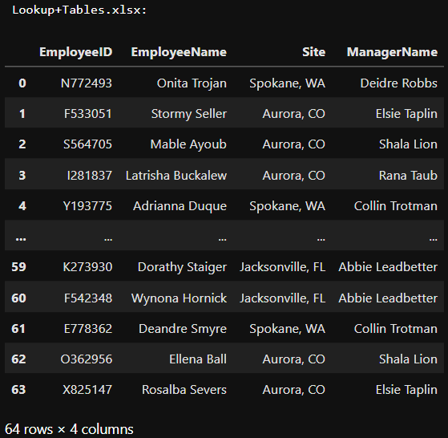
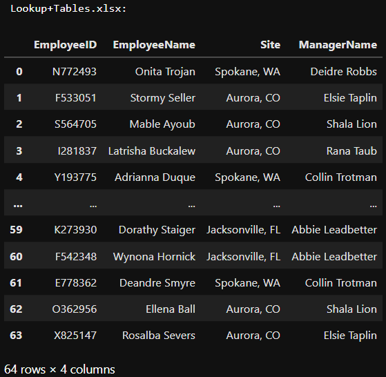

Portfolio


Data Analyst - Engineer
Turning data into actionable insights
Passionate about data analysis and problem-solving, I help businesses make informed decisions by transforming raw data into meaningful insights.
From quality enhancement to data-driven strategy
In the automotive electronics industry, I conducted in-depth data analyses and developed clear visualizations that improved process efficiency and product quality. My work played a key role in refining anomaly detection and optimizing workflows.
Expanding my expertise
To strengthen my skills, I completed an intensive Data Analyst training program, where I deepened my knowledge in Business Intelligence, Machine Learning, and Text Mining, while sharpening my expertise in SQL, Python, and data visualization.
Looking for new challenges
I'm eager to apply my expertise in a dynamic environment where data-driven decision-making is key. I'm particularly interested in leveraging analytics to drive business performance and operational excellence.
 .

.
